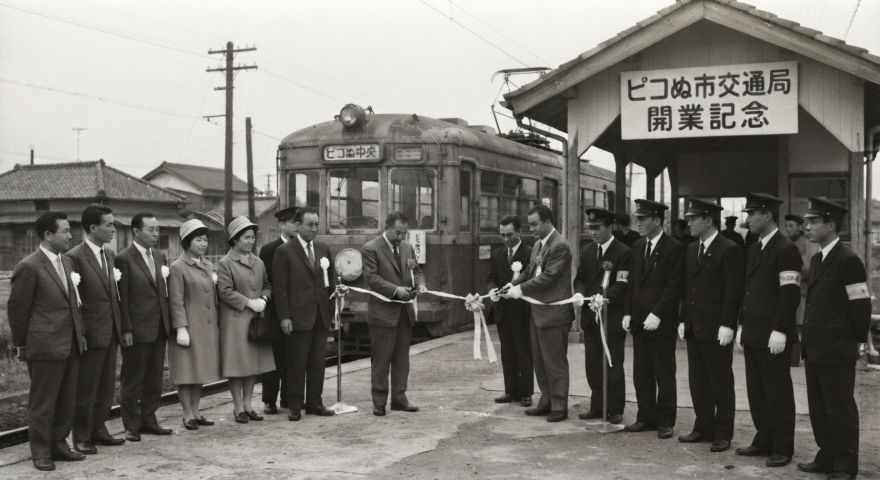

開業概要
ピコぬ市交通局は、昭和38年（1963年）に開業しました。
市内の主要な地域を結ぶ交通手段として、ピコぬ中央駅、連結橋駅、記録町駅の3駅を結ぶ1路線の運行を開始しました。
開業当時から、市内の移動を支える交通機関として運行されており、現在も基本的な路線構成を維持しています。
当時の市内は徒歩による移動も多く、鉄道は徒歩だけでは少し遠い場所を結ぶ交通手段として整備されました。
開業当時の路線
開業時の路線は、現在と同じく3駅を結ぶ1路線でした。
| 駅名 | 開業時の位置づけ |
|---|---|
| ピコぬ中央駅 | 市の玄関口 |
| 連結橋駅 | 連結橋・ぬかピコ川方面 |
| 記録町駅 | 記録町方面 |
駅数を必要以上に増やさず、市内を歩いて巡ることができる規模を維持するという考え方は、現在の交通局にも引き継がれています。
開業記念式典
昭和38年の開業にあたり、ピコぬ中央駅において開業記念式典が行われました。
式典には、市関係者、交通局職員、駅員、関係者などが出席し、開業を祝いました。

ピコぬ中央駅にて。交通局関係者らが出席し、開業を記念して行われた式典の記録です。
開業当時の車両
開業時には2両編成の車両が導入されました。
車両は現在よりも簡素な構造でしたが、市内交通を担う車両として運行されました。
開業当時の車両については、交通資料室に保存されている記録写真から確認することができます。
また、現在も2両編成での運行が基本となっており、開業当時から続く特徴のひとつとなっています。
開業当時の利用案内
開業当時の利用案内では、駅の利用方法や運行時刻などについて案内されていました。
当時の時刻表には、現在とは異なる時刻や表記が見られます。
現在保存されている 「昭和38年時刻表」 は、開業当時の運行状況を知ることができる資料です。
開業から現在まで
ピコぬ市交通局は、昭和38年の開業以来、1路線3駅を基本とする運行を続けています。
市内の規模や徒歩による移動とのバランスを考慮し、路線や駅をいたずらに増やすことなく、現在の形が維持されています。
長い年月の中で車両や設備、運行方法には変化がありましたが、市内を結ぶ交通機関としての役割は現在も変わっていません。
開業当時の資料には、「必要以上に増やさない」という現在の交通局にも通じる考え方が見られます。 なお、当時どの程度までを「必要以上」としていたのかについては、現在の資料からは確認できません。